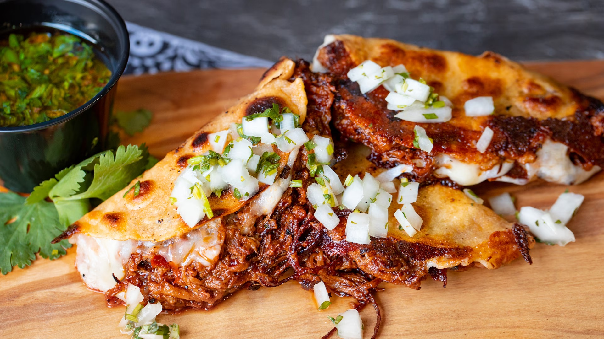

Birria de Chivo Estilo Jalisco

Easily the best tacos you'll taste
Goat meat marinated in a sauce with ancho chiles and spices, then slowly braised until soft. This traditional
dish known as birria is always accompanied with refried beans and corn tortillas, and is normally served for
special occasions.
Ingredients
Marinade
- 3 ancho chile peppers
- 1 cup white vinegar
- 15 whole black peppercorns
- 1 (1 inch) piece fresh ginger root
- 2 garlic cloves, peeled
- 3 whole cloves
- 1 pinch dried marjoram
- 1 pinch ground cumin
- 1 pinc dried thyme
- 4 1/2 pounts goat leg
Meat Sauce
- 2 pounts plum tomatoes
- 2 cups water
- 3 whole black peppercorns
- 2 garlic cloves, peeled
- 2 whole cloves
- 1 pinch dried marjoram
- 1 pinch dried thyme
- 1 pinch ground cumin
Hot Sauce
- 30 chiles de arbol
- 1/4 cup white vinegar
- 10 whole black peppercorns
- 1 clove garlic, peeled
- 2 white onions, minced
Steps
- Bring a pot of water to a boil; add ancho chile peppers and cook for 5 minutes. Remove from heat and let chiles soak in the hot water until soft, about 10 minutes; drain.
- Blend softened chiles, 1 cup vinegar, 15 peppercorns, ginger, 2 garlic cloves, 3 cloves, 1 pinch marjoram, 1 pinch cumin, and 1 pinch thyme in a blender until marinade is smooth. Strain marinade into a bowl.
- Place goat in a bowl and pour in marinade, coating goat completely. Cover and refrigerate for 8 hours.
- Preheat oven to 350 degrees F (175 degrees C). Transfer goat and marinade to a baking dish; cover with a lid or aluminum foil.
- Bake in the preheated oven until goat is very tender, about 3 1/2 hours. Remove lid or foil and cook until goat is browned, about 15 minutes. Pour meat juices into a container and reserve. Cover the goat to keep warm.
- Bring a large pot of water to a boil; add tomatoes and boil until soft, 5 to 10 minutes. Drain and let tomatoes cool until easily handled.
- Peel tomatoes and place in blender with reserved goat juices, 2 cups water, 3 peppercorns, 2 garlic cloves, 2 cloves, 1 pinch marjoram, 1 pinch thyme, and 1 pinch cumin. Blend until meat sauce is smooth.
- Pour meat sauce into a small saucepan and season with salt; bring to a boil. Reduce heat and simmer over low heat.
- Bring a pot of water to a boil; add chiles de arbol and boil until soft, about 5 minutes. Drain.
- Blend softened chiles with 1/4 cup vinegar, 10 peppercorns, 1 garlic clove, and salt until hot sauce is smooth. Strain into a glass.
- Cut goat into bite-sized pieces and serve with a generous amount of meat sauce and hot sauce on the side. Sprinkle onion over goat.